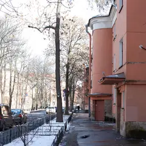
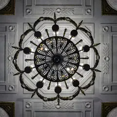
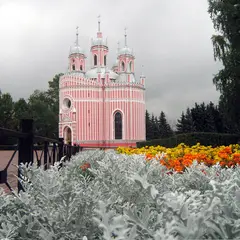

Подборка редакции · Петербург
Места из ленты
Петербург в стороне от Невского: ротонда на Гороховой, галереи дома Бака, проходные дворы Толстовского дома, замок с башнями на Петроградке, львы с цепями над Невой и закат в Комарово. Во дворах и парадных живут люди — ведите себя тихо.
- 16 мест
- до 1 500 ₽ на человека
Что в подборке 16
Гороховая ул., 57
Новое
Круглая лестничная клетка с шестью колоннами, уходящими к куполу; стены исписаны пожеланиями гостей. Главный кадр — снизу вверх по оси колонн. Жилой дом: днём пускают за небольшое пожертвование, приходить тихо и небольшой компанией.
Подробнее и маршрут: Парадная с ротондой (дом Яковлева)Позвать сюда: Парадная с ротондой (дом Яковлева)
Фото: Artyom Svetlov, CC BY-SA 4.0 · Wikimedia Commons
Кирочная ул., 24
Новое
Двор-колодец с крытыми и открытыми галереями на уровне 2-го и 4-го этажей и длинными балконами с кованым узором. Снимать вверх из центра двора днём. Двор открыт, в парадные — только с экскурсией; здесь живут люди, не шумите.
Подробнее и маршрут: Двор дома БакаПозвать сюда: Двор дома Бака
ул. Рубинштейна, 15–17 (насквозь до наб. Фонтанки, 54)
Новое
Три двора Лидваля связаны трёхпролётными арками в «внутреннюю улицу» от Рубинштейна к Фонтанке; излом оси даёт глубокую перспективу из арок. Проход открыт днём и вечером; это жилой дом, ведите себя тихо.
Подробнее и маршрут: Проходные дворы Толстовского домаПозвать сюда: Проходные дворы Толстовского дома
Фото: angelius1979, CC BY-SA 3.0 · Wikimedia Commons

Тракторная ул., 2/8 (у пр. Стачек)
Новое
Шестнадцать светлых домов 1925–1927 годов с полуарками между корпусами, скруглёнными лестничными башнями и разными балконами; ось замыкает школа Никольского.
Подробнее и маршрут: Тракторная улицаПозвать сюда: Тракторная улица
Фото: Артём Светлов, CC BY 4.0 · Wikimedia Commons
ул. Рубинштейна, 7
Новое
Конструктивистский дом 1929–1931 годов с террасой пятого этажа под скатной кровлей и доской Ольге Берггольц на фасаде. Удобный ракурс — с угла Графского переулка.
Подробнее и маршрут: Дом-коммуна «Слеза социализма»Позвать сюда: Дом-коммуна «Слеза социализма»
Фото: Potekhin, CC BY-SA 3.0 · Wikimedia Commons
Каменноостровский пр., 1–3
Новое
Курдонёр с совой на центральном фронтоне, зайцами, рысью и ящерицей в рельефах и балконными решётками-паутинами с пауками. Детали лучше видны в утреннем свете.
Подробнее и маршрут: Дом ЛидваляПозвать сюда: Дом Лидваля
Фото: Riotous.Red, CC BY-SA 4.0 · Wikimedia Commons
Каменноостровский пр., 35 (площадь Льва Толстого)
Новое
Две шестигранные башни Белогруда в духе английского замка держат всю площадь; на одной — циферблат со знаками зодиака. Силуэт эффектен в сумерках.
Подробнее и маршрут: Дом с башнямиПозвать сюда: Дом с башнями
Фото: Grigorius m, CC BY-SA 4.0 · Wikimedia Commons

пр. Стачек, между д. 90 и 94
Новое
Колонны в гранёном литом стекле будто светятся изнутри, люстры с лаврами и мечами, мозаика «Победа» в торце; вниз ведёт лестница красного мрамора.
Подробнее и маршрут: Станция метро «Автово»Позвать сюда: Станция метро «Автово»
Фото: Florstein, CC BY-SA 4.0 · Wikimedia Commons

ул. Ленсовета, 12
Новое
Красная церковь Фельтена с белым каменным кружевом, зубцами и пятью башенками со шпилями — будто вырезана из картона. Красивее всего на закате и в снег.
Подробнее и маршрут: Чесменская церковьПозвать сюда: Чесменская церковь
Фото: Туманова Татьяна, CC BY-SA 3.0 · Wikimedia Commons
Приморский пр., 91
Новое
Храм из колотого гранита по тибетскому канону: позолота, яркая роспись, витражи по эскизам Рериха и пятиметровый Будда в зале под световым фонарём.
Подробнее и маршрут: Дацан ГунзэчойнэйПозвать сюда: Дацан Гунзэчойнэй
Фото: Kimano12, CC BY-SA 3.0 · Wikimedia Commons
Большая аллея, 10 (дача Свягина)
Новое
Тихие аллеи вдоль протоков, деревянные и каменные дачи модерна и готическая церковь Иоанна Предтечи у моста. Особенно хорош осенью и тёплым вечером.
Подробнее и маршрут: Каменный островПозвать сюда: Каменный остров
Фото: Alexey Komarov, CC BY 3.0 · Wikimedia Commons
Свердловская наб., 40
Новое
Двадцать девять сидящих львов держат в пастях тяжёлые цепи, образуя ограду усадьбы над Невой; за ними — отреставрированный особняк. Тёплый свет — на закате.
Подробнее и маршрут: Львы у дачи БезбородкоПозвать сюда: Львы у дачи Безбородко
Фото: Никонико962, CC BY-SA 4.0 · Wikimedia Commons
наб. Крюкова канала, Пикалов мост
Новое
Тихий старый квартал у Никольского собора: с одной точки у Пикалова моста видно семь мостов, вокруг каналы и мало людей.
Подробнее и маршрут: Коломна и СемимостьеПозвать сюда: Коломна и Семимостье
Большой пр. В.О., у пересечения с 24-й–25-й линиями
Новое
Глубокая станция, открытая в декабре 2024-го: светильники-кристаллы, медные рёбра колонн у эскалаторов, панно о горном деле и круглые зеркала с названием.
Подробнее и маршрут: Станция метро «Горный институт»Позвать сюда: Станция метро «Горный институт»
Канонерский остров, парк у Путиловской набережной
Новое
Песчаный пляж с мелководьем, коса с руинами старого маяка и гигантская эстакада ЗСД над головой; через залив виден Лахта Центр. Ехать к закату. Остров за тоннелем под Морским каналом — проще доехать на такси.
Подробнее и маршрут: Канонерский островПозвать сюда: Канонерский остров
пос. Комарово, Приморское ш., спуск к заливу от ж.-д. станции «Комарово»
Новое
Длинный песчаный берег с соснами на склоне и валунами в воде, у кромки — рыбацкие лодки; солнце садится прямо в залив. Рядом «Будка» Ахматовой. Электричка с Финляндского вокзала до «Комарово», дальше пешком к заливу.
Подробнее и маршрут: Комаровский берегПозвать сюда: Комаровский берег
Фото: GAlexandrova, CC BY-SA 4.0 · Wikimedia Commons


Как позвать
- Выбери план, место или событие — в карточке адрес, цены и маршрут в Яндекс Картах.
- Нажми «Позвать сюда» — соберётся приглашение-игра для свидания или голосование для компании.
- Отправь ссылку в любой мессенджер: тебе ответят, а компания отметит, куда и когда может. Бесплатно и без регистрации.